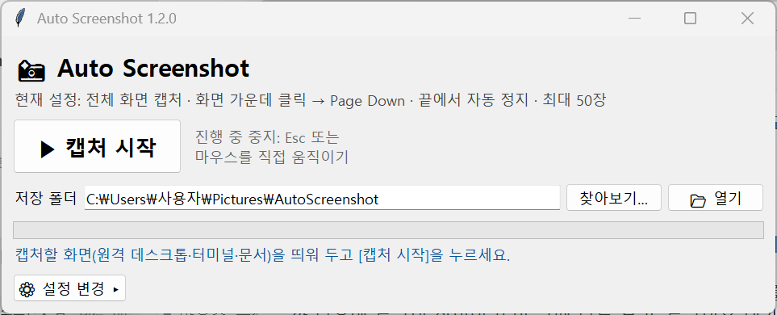
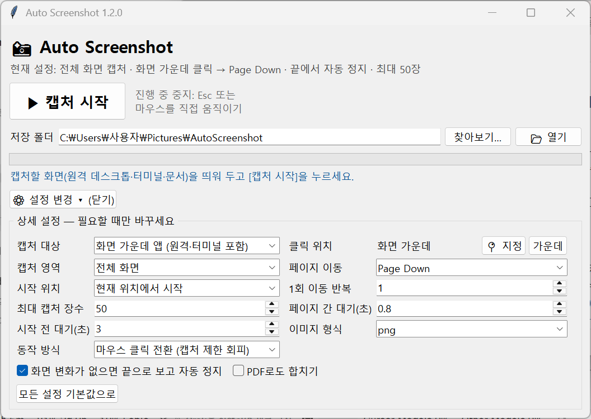

캡처할 화면을 가운데에 띄우고 [캡처 시작]만 누르세요. 화면 가운데를 클릭해 Page Down으로 넘기며 끝까지 전체 화면을 찍고, 새 폴더에 0001.png부터 순서대로 저장합니다. 원격에서 작업한 결과를 받아 오기에 좋습니다.
Windows 10 / 11 · 설치 없이 바로 실행 · 처음 실행 시 SmartScreen 경고가 뜨면 “추가 정보 → 실행”을 누르세요.

마우스가 화면 가운데를 클릭해 원격 데스크톱·터미널 등 그 자리의 앱을 활성화합니다.
Page Down(또는 Space, 방향키, 휠)으로 다음 화면으로 이동합니다.
마우스가 작은 캡처 패널로 돌아와 클릭해 이 앱을 활성화합니다.
패널을 잠깐 투명하게 한 뒤 전체 화면을 찍어 번호 순서대로 저장합니다.
대상 창이 비활성 상태에서 찍히므로 글자 커서와 마우스 포인터가 이미지에 남지 않습니다. 대상 앱이 활성 상태일 때만 캡처를 막는 경우에도 캡처할 수 있습니다.
화면이 더 이상 바뀌지 않으면 문서 끝으로 보고 스스로 멈춥니다.
시작 버튼과 저장 폴더만. 나머지 옵션은 ⚙ 설정 변경에 접혀 있습니다.
Esc를 누르거나 마우스를 직접 움직이면 즉시 멈춥니다. 다른 창이 끼어들어도 멈춥니다.
필요하면 클릭할 위치를 직접 찍거나, 목록에서 특정 창만 골라 캡처합니다.
기본은 전체 화면. 대상 창 영역만 또는 모든 모니터로 바꿀 수 있습니다.
이미지로 저장하고, 원하면 한 개의 PDF로도 합칩니다.
| 대상 | 시작 위치 | 페이지 이동 방식 |
|---|---|---|
| 원격 데스크톱 (전체 화면) | 기본값 | Page Down (기본값) |
| 메모장 · Word · VS Code | Ctrl+Home | Page Down |
| Windows Terminal · PowerShell | Ctrl+Shift+Home | Shift+Page Down |
| 웹 브라우저 · PDF 뷰어 | 현재 위치 또는 Ctrl+Home | Page Down 또는 Space |
| 키 입력이 안 먹는 앱 | 현재 위치 | 마우스 휠 |
